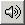
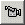
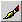
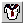
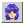
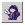

The Kisekae UltraKiss Toolbar is an optional menu at the top of the screen that displays icons for common menu functions. The toolbar icons and their functions are shown below.
New set. The New command is used to create new KiSS data sets. New sets create a default configuration element with one new empty page set in the configuration. Graphic elements such as images can be imported into this page with the Edit-Import Image edit command. The set configuration properties can be accessed and edited through the File-Properties command or the View-Data Objects command.
Open file. The Open command is used to open a new KiSS data set configuration file or any other file recognized by the Kisekae UltraKiss program. The UltraKiss program can open KiSS archive files, KiSS configuration elements, KiSS palette elements, KiSS cels, standard text files, rich text files, image files, sound files, and movie files.
 Select
configuration. The Select command is used to select and open a new KiSS data set configuration file
contained within the current file directory or compressed archive file.
A Configuration Selection dialog is displayed. All configuration files found in the current data set
archive are listed in the selection dialog. After selecting a configuration the File Load activity begins.
Select
configuration. The Select command is used to select and open a new KiSS data set configuration file
contained within the current file directory or compressed archive file.
A Configuration Selection dialog is displayed. All configuration files found in the current data set
archive are listed in the selection dialog. After selecting a configuration the File Load activity begins.
Save file. KiSS data sets are, by default, saved to the file directory or compressed archive file from which they were loaded. For example, if the data set was loaded from an archive file then all updated elements are written to this archive file. If the files were loaded from a file directory then the Save operation writes all updated elements into this directory. Note that data sets loaded from a compressed archive file may rewrite the complete archive file replacing all updated elements with their new contents. For data sets loaded from a directory only the updated element files are written.
Cut selection. The Cut operation will remove selected objects from the current page. Objects, when cut, are placed in the clipboard and can be referenced through a subsequent Paste command. Cut group objects or cels are no longer associated with the current page. For a full description of the features and capabilities of the Edit subsystem, refer to the Edit Functions document.
Copy selection. The Copy operation transfers selected objects to the clipboard. Objects in the clipboard and can be referenced through a subsequent Paste command. For a full description of the features and capabilities of the Edit subsystem, refer to the Edit Functions document.
Paste selection. The Paste operation inserts objects from the clipboard into the current page. Objects, when pasted, are located in the new page at their initial object locations. Cels pasted into a new page become associated with the page. If the paste operation duplicates existing group objects or cels on the page then new cel identifiers and new object groups are created.
Undo edit. UltraKiss supports full undo and redo edit recovery. Most editing changes made to a KiSS data set are reversible. Undo support is available for Edit Cut, Copy, and Paste operations. Object selections and grouping can be undone, as can selected object movements. Palette color changes applied through the Color Editor can be undone. Page set additions and deletions can be undone. For a full description of the features and capabilities of the Edit subsystem, refer to the Edit Functions document.
Redo edit. UltraKiss supports full undo and redo edit recovery. Most editing changes made to a KiSS data set are reversible. Redo support is available for Edit Cut, Copy, and Paste operations. Object selections and grouping can be redone, as can selected object movements. Palette color changes applied through the Color Editor can be redone. Page set additions and deletions can be redone. For a full description of the features and capabilities of the Edit subsystem, refer to the Kisekae Edit Functions document.
Page set. The number in the box identifies the page set. Pressing on a page button switches the display to the specified page.
Palette Group selection. The color identifies the color set background color. Pressing on a palette button switches the display to the specified colors.
Shift control. This button displays the next or prior page or page group toolbar buttons. The shift control is only displayed if the KiSS set has more than the specified maximum number of buttons configured for the toolbar. Clicking on the black arrows shifts the button display list backwards or forwards. Note that older KiSS sets and viewers are not designed to display more than 10 pages or color sets.
 Sound on/off. This is a toggle switch to globally enable sound support.
 Movie on/off. This is a toggle switch to globally enable movie support. Note that movie support is experimental.
FKiSS breakpoint. This is a toggle switch to enable FKiSS breakpoints on the next event or action statement. The FKiSS Editor tool is automatically launched to facilitate tracing and debugging of FKiSS code.
 Edit selection. This is a toggle switch to enable edit selection of
objects on the screen. For a full description of the features and capabilities of the Edit subsystem,
refer to the Edit Functions document.
Edit selection. This is a toggle switch to enable edit selection of
objects on the screen. For a full description of the features and capabilities of the Edit subsystem,
refer to the Edit Functions document.
Text Editor. This button launches the Text Editor tool.
 Color Editor. This button launches the Color Editor tool.
Archive Editor. This button launches the Archive Editor tool.
 Image Editor. This button launches the Image Editor tool.
Media Player. This button launches the UltraKiss Media Player.
FKiSS Editor. This button launches the FKiSS Editor.
FKiSS enable. This toggle button enables or disables FKiSS code execution. If the ball is green FKiSS events can process. If the ball is red the FKiSS event handler is suspended. If the ball is yellow the FKiSS Editor will interrupt execution on the next breakpoint.
 PlayFKiss compatibility. This toggle button, if pressed, enables PlayFKiss compatibility. All events and FKiSS code conform to PlayFKiss syntax and semantics.
 DirectKiss compatibility. This toggle button, if pressed, enables DirectKiss compatibility. All events and FKiSS code conform to DirectKiss syntax and semantics.
GnomeKiss compatibility. This toggle button, if pressed, enables GnomeKiss compatibility. All events and FKiSS code conform to GnomeKiss syntax and semantics.
Next Document: Program Options
Prior Document: Menu Commands
Copyright (c) 2002-2023 William Miles